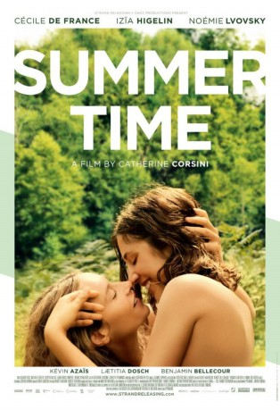
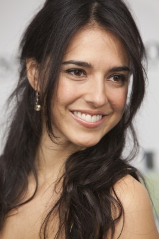
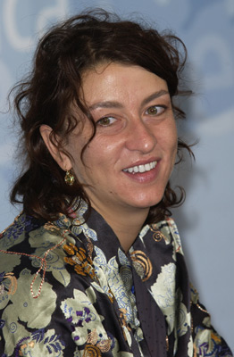
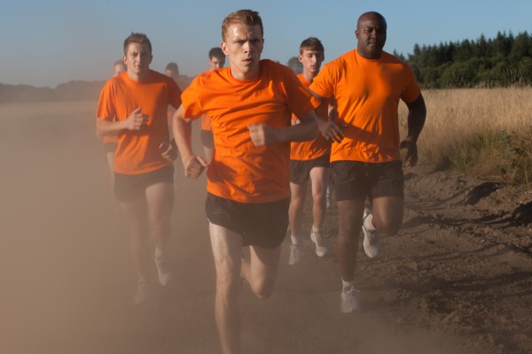

#4530 La belle saison - Eine Sommerliebe
 
 IMDB-Wertung: 6.6 / 10
IMDB-Wertung: 6.6 / 10  Metascore: 0
Metascore: 0 
Frankreich in den 70er Jahren: Die 23-jährige Delphine (Izïa Higelin) verlässt den Bauernhof ihrer Eltern und zieht nach Paris, wo sie sich ein Leben frei von ländlicher Engstirnigkeit und überkommenen Moralvorstellungen erhofft. Sie schließt sich einer Gruppe an, die für Frauenrechte kämpft, und lernt dort die quirlige Carole (Cécile de France) kennen. Schnell werden die Frauen Freundinnen und bald entspinnt sich zwischen ihnen eine zarte Liebesbeziehung, die jedoch jäh unterbrochen wird, als Delphine wegen der Erkrankung ihres Vaters (Jean-Henri Compère) nach Hause beordert wird. Ihre Mutter (Noémie Lvovsky) braucht Hilfe auf dem Bauernhof und für Delphine scheint eine baldige Rückkehr nach Paris unmöglich, wenn sie ihre Familie nicht im Stich lassen will. Kurzerhand reist ihr Carole hinterher und was als ein glücklicher Sommer voller leidenschaftlicher Momente in ländlicher Idylle beginnt, wird für beide Frauen bald zur Zerreißprobe.
Jahr: 2015
Dauer: 105 Minuten
FSK: 12
Land: Frankreich Studio: Alamode FilmTonspuren:
Untertitel: Deutsch,
Auflösung: 1080p (1920x808) Größe: 4659 MB
Genre: Drama, Liebe
Regisseur: Catherine Corsini
Drehbuch: John Carney
Soundtrack:
Darsteller:
-  Cécile De France als Carole
- Izïa Higelin als Delphine Benchiessa
-  Noémie Lvovsky als Monique Benchiessa- la mère de Delphine
-  Kévin Azaïs als Antoine
- Alix Bénézech als Etudiante Beaux-Arts
- Patrice Tepasso als Christophe
- Jean-Henri Compère als Maurice Benchiessa - le père de Delphine
- Loulou Hanssen als Françoise
- Benjamin Bellecour als Manuel
- Laetitia Dosch als Adeline
- Sarah Suco als Fabienne
- Calypso Valois als Charlotte
- Natalie Beder als Marie-Laure
- Bruno Podalydès als Le professeur Chambard
- Antonia Buresi als Geneviève
- Julie Lesgages als Joëlle
- Benjamin Baroche als Le type qui se fait mettre la main aux fesses
- Nathalie Lovigui als Une militante MLF dans l'amphi
- Mika Tard als Une militante MLF dans l'amphi
- Dominique Bernardi als La passante qui reçoit un tract
- Juan Lopez Ballo als Un ami de Manuel
- Grégory Vouland als Un ami de Manuel
- Sébastien Novac als Un ami de Manuel
- Jack Gomez als Le gardien de l'hôpital de Guy
- Franc Bruneau als Guy
- Stéphane Otero als Hervé
- Odile Perez als Tante Hélène
- Camille Charbeau als Le facteur
- Yannick Chassagne als André
- Pascal Degot als Un agriculteur
- Jean-Marie Nicot als Un agriculteur
- Guy Defaye als Un agriculteur
- Jean Lavergne als Un agriculteur
- Yves Mion als Un agriculteur
- Alain Labrune als Un agriculteur
- Dominique Barlet als Un agriculteur
- Jean-Bernard Legros als Un agriculteur
- Philippe Nicot als Un agriculteur
- Lola Guillain-Lessieu als Josette - une villageoise
- Sébastien Lerousseau als Un ami à la fête de la Saint-Jean
- Kevin Guesdon als Un ami à la fête de la Saint-Jean
- Fanny Besnier als Un ami à la fête de la Saint-Jean
- Florian Catherine als Un ami à la fête de la Saint-Jean
- Eric Guesdon als Le pêcheur
- Zoé Mandaragan als La jeune fille au Planning Familial
- Siegrid Alnoy als La collègue de Carole au Planning Familial
Datei: X:\2015(G-M)\La belle saison - Eine Sommerliebe (2015, FSK12, 1920x808).mkv seit 09.10.2016
Festplatte: HD 2015(A-Z)
 Es gibt insgesamt 129 Filme in der Gruppe '2015(G-M)'
Es gibt insgesamt 129 Filme in der Gruppe '2015(G-M)'